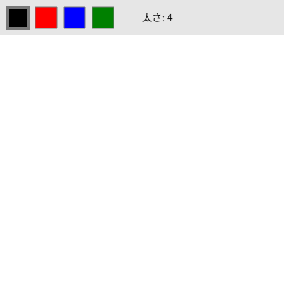

8. インタラクション
この章では、マウスやキーボードの操作に反応するスケッチの作り方を説明します。
8.1. 状態を調べる方法とイベント関数
操作に反応する方法は 2 つあります。
方法 |
仕組み |
向いている処理 |
|---|---|---|
システム変数を調べる |
|
押している間ずっと続く処理 |
イベント関数を定義する |
|
1 回の操作に 1 回だけ反応する処理 |
たとえば、ボタンを押している間ずっと線を描くなら mouseIsPressed を、クリックするたびに色を切り替えるなら mousePressed() を使います。draw() の中で mouseIsPressed を使って色を切り替えると、ボタンを押している間、毎フレーム切り替わってしまいます。
8.2. マウス
マウスに関するシステム変数とイベント関数を次の表に示します。
名前 |
内容 |
|---|---|
|
現在のマウスの位置 |
|
1 つ前のフレームでのマウスの位置 |
|
マウスボタンが押されている間 |
|
マウスボタンが押された瞬間に呼ばれる。 |
|
マウスボタンが離された瞬間に呼ばれる。 |
|
ボタンを押したままマウスが動いたときに呼ばれる。 |
|
ボタンを押さずにマウスが動いたときに呼ばれる。 |
line(pmouseX, pmouseY, mouseX, mouseY) のように前のフレームの位置と現在の位置を結ぶと、マウスを速く動かしても途切れない線を描けます。
8.3. 当たり判定
マウスが図形の上にあるかどうかを調べることを、当たり判定 と呼びます。
長方形の場合は、マウスの座標が長方形の範囲に入っているかを x と y のそれぞれで調べます。左上の角が \((x, y)\)、幅が \(w\)、高さが \(h\) の長方形では、次の条件を満たすときにマウスが長方形の上にあります。
円の場合は、マウスと円の中心との距離が半径以下かどうかで判定します。中心 \((c_x, c_y)\) とマウスとの距離 \(d\) は次の式で求められ、p5.js では dist() 関数で計算できます。
1const d = dist(mouseX, mouseY, cx, cy);
2if (d <= diameter / 2) {
3 fill(255, 0, 0); // 円の上にマウスがあるときは赤く塗る
4} else {
5 fill(255);
6}
7circle(cx, cy, diameter);
8.4. キーボード
キーボードに関するシステム変数とイベント関数を次の表に示します。
名前 |
内容 |
|---|---|
|
最後に押されたキーを表す文字列。英字は |
|
いずれかのキーが押されている間 |
|
指定したキーが押されているかどうかを返す。複数のキーの同時押しを調べるときに使う。 |
|
キーが押された瞬間に呼ばれる。 |
|
キーが離された瞬間に呼ばれる。 |
key の値は、ブラウザーの KeyboardEvent.key と同じ文字列です。矢印キーは 'ArrowUp'、'ArrowDown'、'ArrowLeft'、'ArrowRight'、Enter キーは 'Enter'、スペースキーは ' '（半角空白 1 文字）になります。
8.5. ウィンドウの大きさに合わせる
キャンバスをブラウザーのウィンドウいっぱいに広げたいときは、システム変数 windowWidth と windowHeight を使います。ウィンドウの大きさが変わったときに呼ばれる windowResized() の中で resizeCanvas() を呼ぶと、キャンバスの大きさが追従します。
1function setup() {
2 createCanvas(windowWidth, windowHeight);
3}
4
5function windowResized() {
6 resizeCanvas(windowWidth, windowHeight);
7}
8.6. サンプル
マウスで線を描くお絵かきツールです。上部のボタンで色を切り替え、キーボードで線の太さの変更、消去、保存ができます。
1// マウスで線を描くお絵かきツール
2// ドラッグ ：線を描く
3// 上部のボタン ：色を切り替える
4// ↑ / ↓ キー ：線の太さを変える
5// c キー ：消去する
6// s キー ：PNG 画像として保存する
7
8const COLORS = ['black', 'red', 'blue', 'green'];
9const BUTTON_SIZE = 30;
10const PALETTE_HEIGHT = 50; // ボタンを置く上部の領域の高さ
11let currentColor = 'black';
12let weight = 4;
13
14function setup() {
15 createCanvas(400, 400);
16 background(255);
17}
18
19function draw() {
20 drawPalette();
21
22 // マウスボタンが押されている間、前のフレームの位置から現在の位置まで線を引く
23 if (mouseIsPressed && mouseY > PALETTE_HEIGHT && pmouseY > PALETTE_HEIGHT) {
24 stroke(currentColor);
25 strokeWeight(weight);
26 line(pmouseX, pmouseY, mouseX, mouseY);
27 }
28}
29
30// 画面上部に色のボタンと線の太さを描く
31function drawPalette() {
32 // 上部の領域だけを毎フレーム描き直す
33 noStroke();
34 fill(230);
35 rect(0, 0, width, PALETTE_HEIGHT);
36
37 for (let i = 0; i < COLORS.length; i++) {
38 // 選択中の色のボタンは太い枠で囲む
39 stroke(120);
40 strokeWeight(COLORS[i] === currentColor ? 4 : 1);
41 fill(COLORS[i]);
42 rect(buttonX(i), 10, BUTTON_SIZE, BUTTON_SIZE);
43 }
44
45 noStroke();
46 fill(0);
47 textSize(14);
48 text(`太さ: ${weight}`, 200, 30);
49}
50
51// i 番目のボタンの左端の x 座標を返す
52function buttonX(i) {
53 return 10 + i * (BUTTON_SIZE + 10);
54}
55
56// マウスボタンを押した瞬間に 1 回だけ呼ばれる
57function mousePressed() {
58 for (let i = 0; i < COLORS.length; i++) {
59 const x = buttonX(i);
60 // マウスの位置がボタンの範囲内にあるかを判定する
61 const insideX = mouseX >= x && mouseX <= x + BUTTON_SIZE;
62 const insideY = mouseY >= 10 && mouseY <= 10 + BUTTON_SIZE;
63 if (insideX && insideY) {
64 currentColor = COLORS[i];
65 }
66 }
67}
68
69// キーを押した瞬間に 1 回だけ呼ばれる
70function keyPressed() {
71 if (key === 'c') {
72 background(255);
73 } else if (key === 's') {
74 saveCanvas('drawing', 'png');
75 } else if (key === 'ArrowUp') {
76 weight = min(weight + 1, 20);
77 } else if (key === 'ArrowDown') {
78 weight = max(weight - 1, 1);
79 }
80}
ダウンロード：
index.html、sketch.js


図 8.1 サンプルの実行結果（起動直後）
このスケッチは、2 つの方法を使い分けています。線を描く処理は押している間ずっと続くため、draw() の中で mouseIsPressed を調べています（23 行目）。色の切り替えはクリック 1 回につき 1 回だけ行うため、mousePressed() で処理しています（57〜67 行目）。
draw() の中で background() を呼んでいない点にも注目してください。背景を毎フレーム塗りつぶさないため、描いた線がキャンバスに残ります。上部のボタンの領域だけは、選択中の色の枠を描き直すため、drawPalette() で毎フレーム塗りつぶしています。